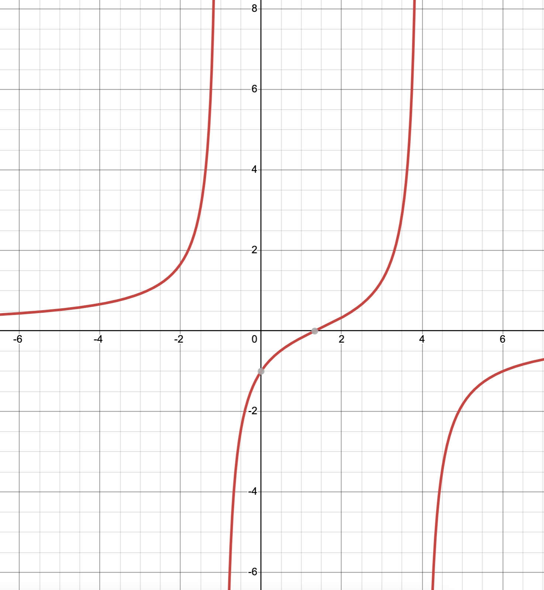
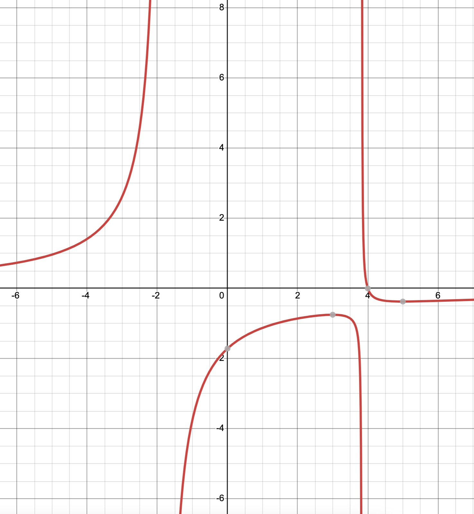
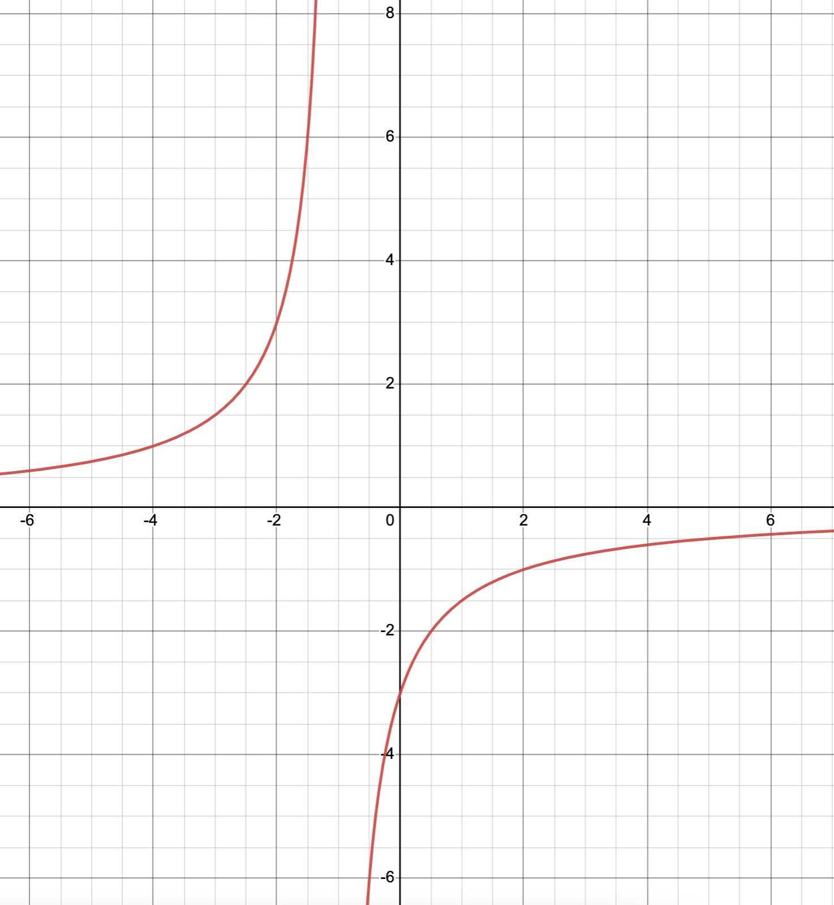
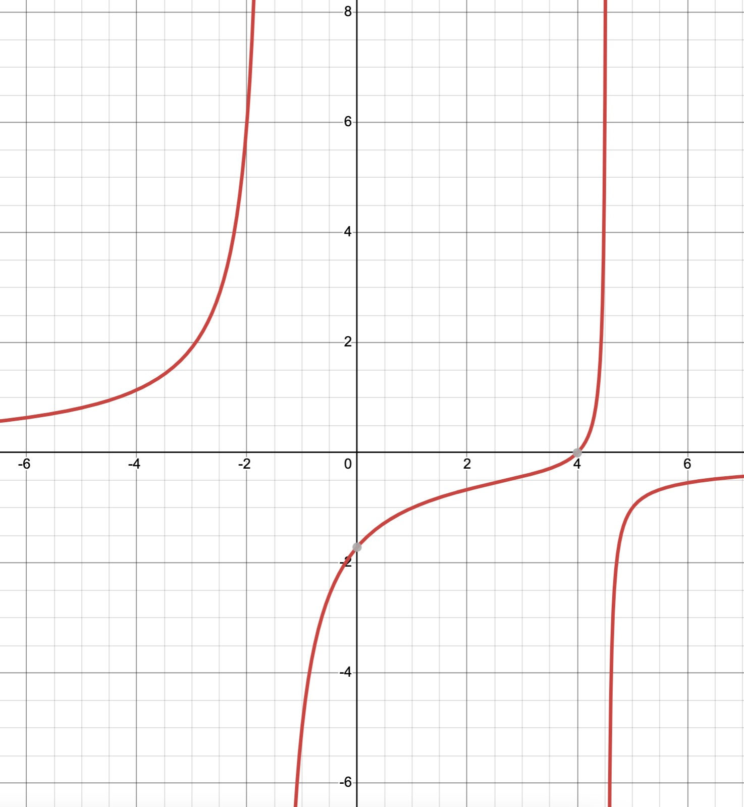

Rational Functions
Home
Test
✖
☰
Test
1. Find the domain of the following expressions: (x-3) / (x
2
-2x-8)
x ≠ 7
(0 , +∞)R
x ≠ -7
(-∞ , +∞)R
Rational Function
2. Find the domain and the range of the following expressions: y = (1/(x+3))-5
Domain = { x∈R| x ≠ 3}, Range = {y∈R| y ≠ 5}
Domain = { x∈R| x ≠ 3}, Range = {y∈R| y ≠ -5}
Domain = { x∈R| x ≠ -3}, Range = {y∈R| y ≠ 5}
Domain = { x∈R| x ≠ -3}, Range = {y∈R| y ≠ -5}
3. Find the asymptotes for the following expressions: (x+2) / (2x+5)
HA: y=-1/2, VA: y=-5/2
HA: y=-1/2, VA: y=5/2
HA: y=1/2, VA: y=-5/2
HA: y=2, VA: y=5/2
4. Find the vertical asymptotes, and the holes if found for the following expressions: (x
2
-x-6) / (x
2
-9)
x ≠ 3
x ≠ -3
x ≠ -1/3
x ≠ 1/3
5. Find the horizontal and slant asymptotes for the following expressions: y = (x
2
+3x+1) / (4x
2
-9)
HA: y = 1/4, SA: None
HA: y = -1/-4, SA: 1/4
HA: None, SA: 1/4
HA: y = 1/4, SA: 1/4
6. Graph the following function: (-3x+12) / (x
2
-3x-4)




7. Find the inverse rational function for the following expressions: y = (-3x-1) / (x+5)
f
-1
(x) = (x-1)/(x-2); Domain: x≠2, Range: y≠1
f
-1
(x) = (x-2)/(x-1); Domain: x≠2, Range: y≠1
f
-1
(x) = (x-1)/(x-2); Domain: x≠-2, Range: y≠-1
f
-1
(x) = (x+1)/(x+2); Domain: x≠2, Range: y≠1
Feedback
Start
✓